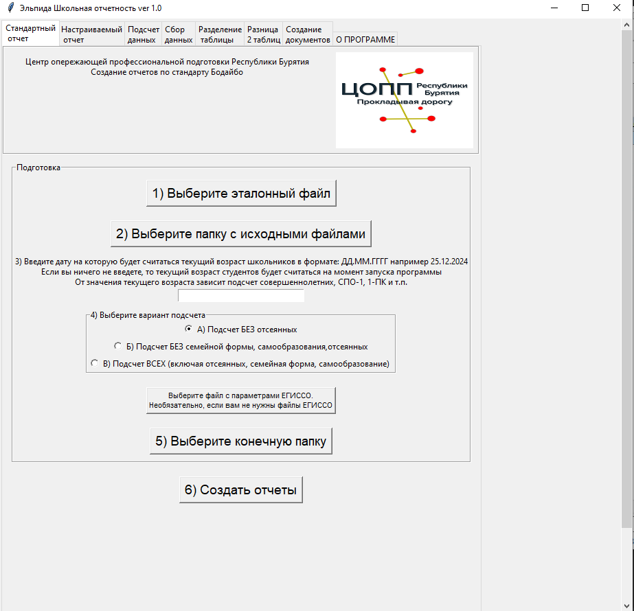

Назначение программы
Программа Эльпида предназначена для облегчения сбора, хранения и обработки некоторых видов отчетности (социальная, воспитательная) для классного руководителя, на уровне школы, на уровне РУО (районное управление образования). Также с ее помощью на основе собранных данных можно массово создавать однотипные документы (справки, согласия, сертификаты и т.п.) и формировать данные для загрузки в систему ЕГИССО.
Для ее работы нужен только Excel или его аналоги, а для создания однотипных документов Word или его аналоги. Программа не использует базы данных, локальную сеть, Интернет. Ей не нужен программист для сопровождения и добавления новых обрабатываемых данных. Она бесплатна.
Программа внесена в реестр отечественного программного обеспечения
Ссылка на свидетельство РоспатентаСсылка на запись в реестре отечественного ПО
Что может программа
- Генерация отчета Соцпаспорт стандарт Бодайбо
- Генерация отчета Контингент стандарт Бодайбо
- Генерация настраиваемого отчета
- Поиск ошибок в персональных данных школьников
- Создание общего файла, содержащего данные всех школьников из всех файлов
- Частотная таблица по каждой колонке общего файла
- Создание файла с данными льготников для внесения в шаблон ЕГИССО
- Исправление и поиск ошибок в файлах ЕГИССО
- Создание общего свода по данным из колонок, начинающихся со слов Статус_, Подсчет_, Список_
- Поиск ошибок в структуре файлов с данными
- Свод по возрастам
- Массовая обработка табличных отчетов, путем суммирования значений ячеек в указанных листах и диапазонах
- Массовое объединение таблиц со списочной структурой в одну
- Извлечение данных из таблиц xlsx со сложной структурой
- Разделение таблицы на несколько частей по уникальным значениям выбранной колонки
- Поиск различий между двумя таблицами с одинаковой структурой
- Обрабатывать колонки с датами рождения (вычисление текущего возраста,разбиение по категориям совершеннолетний/несовершеннолетний, по месяцам, по годам.
- Создание однотипных документов docx (Word и его аналоги) справки, договора, личные дела.
- Создавать пакетом однотипные документы docx (договора, журналы учета, справки, удостоверения, благодарности и т.п.)
Входные данные
Программа использует в своей работе файлы формата xlsx (Excel или его аналоги) в которых содержатся данные школьников и файлы формата docx (Word и его аналоги) используемые в качестве шаблонов для создания справок, договоров и т.п.
Программа не использует в своей работе какие-либо базы данных
Выходные данные
В папке которую выбирает пользователь создаются файлы формата xlsx и docx
Алгоритм работы
1) Классный руководитель вносит в таблицу с определенной структурой данные школьников.
2) Все данные по классу теперь будут храниться в одной удобной таблице, а не по нескольким файлам и мессенджерам.
3) Структура этой таблицы одинакова для всей школы, для обеспечения единообразия используются выпадающие списки для того, чтобы используемые названия статусов были одинаковыми.
4) Классный руководитель может использовать программу для создания отчетности по своему классу.
5) При сборе отчетности на уровне школы классный руководитель отсылает файл с данными лицу ответственному за сбор отчетности в школе.
6) Заполненные таблицы собираются в одной папке.
7) Сотрудник ответственный за создание отчетов собирает файлы от классных руководителей и запускает программу Эльпида.
8) В выбранной папке генерируется необходимая для отчетов информация в разрезе классов, номеров классов, возрастов, годов рождения, полов, при этом программа сразу формирует списки, на основе которых были получены цифры социального паспорта и отчета по контингенту.
9) Также создаются своды по листам с образовательными и прочими мероприятиями, данные для заполнения ЕГИССО и т.п.
10) На уровне РУО используя функции Подсчет данных, Сбор данных, Извлечение данных производится сбор и обработка данных от школ.
Для облегчения процесса внедрения созданы:
1) Алгоритм внедрения. Файл в котором указано по шагам как провести внедрение в общеобразовательной организации.
2) Приказ о внедрении. Пример приказа о внедрении в ОО.
3) Базовый шаблон для заполнения в формате xlsx. ОО может использовать его или дополнить какими то своими данными.
4) Анкета для сбора данных школьников в формате docx. Для облегчения труда классных руководителей можно использовать сбор данных в бумажном виде распечатав эту анкету.
Материалы для внедрения вы можете скачать по ссылке внизу страницы.
Интерфейс пользователя
При работе с программой используется графический интерфейс
Совместимость
Операционная система: Windows 7, Windows 8 / 8.1, Windows 10 и выше, Linux (Импортозамещенные ОС: Red OS, Alt Linux, Astra Linux)
Безопасность
Программа работает локально, не использует локальную сеть или сеть Интернет.
Исходные файлы xlsx и docx пользователя не изменяются программой.
Удобство использования
В интерфейсе программы используются вкладки, на каждой из вкладок находится все что нужно для работы конкретной функции программы.
В программе не используются меню различной степени вложенности, все шаги которые нужно выполнить пользователю пронумерованы по порядку.
Интерфейс ориентирован на пользователей с невысоким уровнем компьютерной грамотности.
Поддержка
Предложения, замечания по работе программы отправлять на почту itdarhan@yandex.ru
Скачать
Чтобы начать работу, скачайте инструкцию
Скачать инструкцию по установке и началу работыВ руководстве пользователя вы найдете подробное пошаговое руководство по работе с каждой из функций программы.
Скачать руководство пользователяСкачайте и распакуйте архив с материалами для внедрения. Персональные данные используемые в примерах, являются искусственно сгенерированными.
Скачать материалы для внедренияОбучающие видео по работе с программой.
Обучающие видеоВыберите нужную версию Эльпиды для скачивания.
Скачать версию Эльпида для Windows x64Скачать версию Эльпида для Windows x32
Скачать версию Эльпида для Linux x64